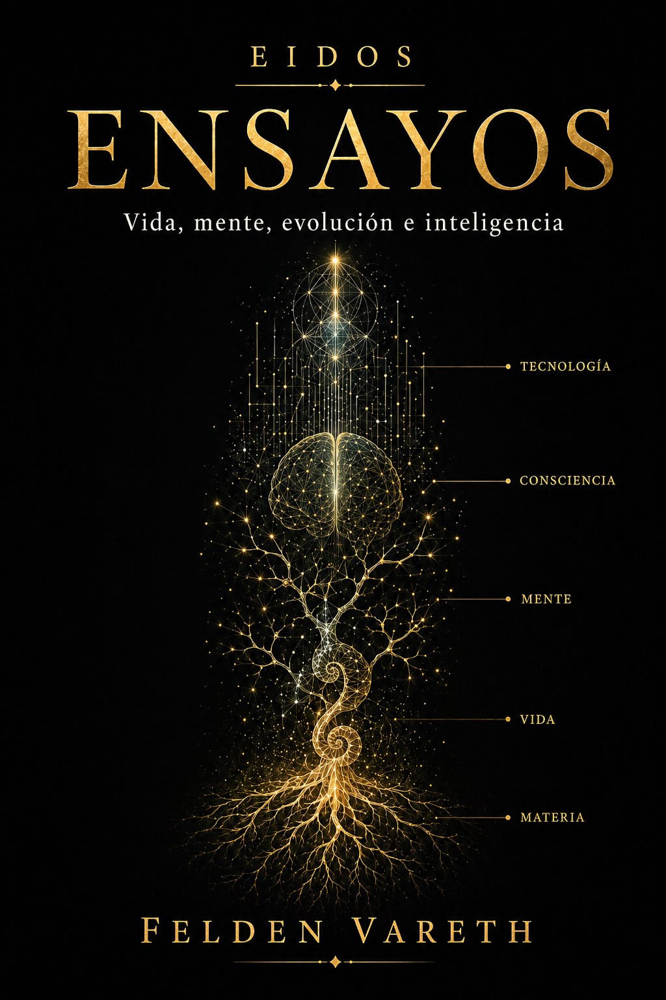

Hay una frase que repetimos durante buena parte de la vida: "cuando consiga esto". Cuando termine de estudiar. Cuando encuentre trabajo. Cuando gane más. Cuando tenga una casa. Cuando publique. Cuando me enamore. Cuando mis hijos crezcan. Cuando pueda dejar de preocuparme. Después, pensamos, llegará un estado distinto. Una especie de territorio interior al que llamamos felicidad.
Lo extraño es que muchas veces conseguimos aquello que queríamos.
Y durante un tiempo funciona.
La noticia llega, el contrato se firma, el examen se aprueba, la persona responde, el proyecto sale adelante. Sentimos alegría, alivio, orgullo o entusiasmo. A veces una mezcla de todos ellos.
Después ocurre una de las propiedades más extraordinarias de nuestro sistema nervioso.
La nueva realidad empieza a parecernos normal.
Tal vez uno de nuestros errores sea tratar la felicidad como un lugar al que pudiéramos llegar y quedarnos.
Las condiciones de vida importan. También los vínculos, la salud, la seguridad y los recursos. Una enfermedad no se resuelve con una buena actitud y nadie debería cargar con la responsabilidad de sentirse feliz en medio de circunstancias devastadoras. Décadas de investigación sobre bienestar muestran que algunos acontecimientos pueden modificar durante años la satisfacción con la propia vida.
También sabemos otra cosa. La experiencia de estar bien desborda cualquier lista objetiva de posesiones. En ella intervienen expectativas, comparaciones, aprendizaje, memoria, atención, cultura, relaciones, sensación de control y la interpretación de nuestras experiencias.
Por eso quizá la pregunta "¿qué necesito para ser feliz?" contenga ya una pequeña trampa.
Quizá la felicidad nunca haya sido una recompensa situada al final.
Una palabra demasiado grande
Antes de preguntarnos cómo conseguirla conviene aclarar de qué estamos hablando. "Felicidad" es una palabra cotidiana que reúne fenómenos distintos. Podemos sentir placer durante unos segundos, buen ánimo durante una tarde, satisfacción al evaluar nuestra vida entera o la sensación de que nuestras acciones tienen sentido. Todos esos estados se relacionan, pero no son equivalentes.
La psicología utiliza con frecuencia el concepto de bienestar subjetivo para estudiar parte de este territorio. Incluye evaluaciones cognitivas, como la satisfacción con la vida, y componentes afectivos, como la frecuencia relativa de emociones agradables y desagradables. La palabra importante es "subjetivo". La razón está en que el objeto que se intenta medir es una experiencia del individuo.
Dos personas pueden compartir ingresos, edad, vivienda y condiciones laborales y evaluar su vida de forma diferente. También una misma persona puede juzgarla de manera distinta en dos momentos sin que su patrimonio, su casa o su trabajo hayan cambiado.
Esto plantea una dificultad científica evidente. La felicidad carece de un termómetro que podamos colocar debajo de la lengua. Los investigadores recurren a cuestionarios, escalas de satisfacción, muestreos repetidos durante el día, tareas experimentales, medidas fisiológicas y neuroimagen. Cada método captura una parte del fenómeno y tiene sus limitaciones.
Conviene recordarlo cuando aparecen titulares que pretenden haber descubierto "la cantidad exacta de dinero que hace feliz" o "la fórmula de la felicidad". La ciencia puede estudiar regularidades, factores asociados, mecanismos y probabilidades. No convierte una experiencia humana compleja en una única cifra universal.
Bibliografía de esta sección
Cuando llegue
Gran parte de nuestra vida se organiza alrededor de anticipaciones. Trabajamos por nuestras acciones presentes y por la imagen de un futuro en el que determinadas condiciones serán distintas.
"Cuando llegue" es una estructura mental poderosísima.
Puede sostener años de esfuerzo. Una oposición, una carrera, una empresa, una investigación, una novela o el ahorro necesario para una vivienda serían difíciles de explicar si nuestra mente solo respondiera al presente inmediato. Somos capaces de representar una recompensa futura y actuar hoy en función de ella.
El problema aparece cuando confundimos esa capacidad con una promesa emocional.
Imaginamos que conseguiremos un objetivo y también cómo nos sentiremos después. Las personas solemos cometer errores al estimar la intensidad y duración de nuestras futuras emociones. La investigación sobre predicción afectiva ha encontrado de forma repetida un "impact bias": tendemos a sobreestimar cuánto tiempo determinados acontecimientos positivos o negativos dominarán nuestra experiencia.
Eso ayuda a explicar una sensación conocida. Una meta puede importarnos muchísimo antes de conseguirla y ocupar mucho menos espacio mental unos meses después. Su importancia podía ser real y nuestra vida seguía avanzando alrededor de ella.
El futuro que imaginábamos desde lejos se convierte en presente.
Y el presente tiene una extraña tendencia a volverse cotidiano.
Bibliografía de esta sección
Adaptarse no es volver siempre
La llamada adaptación hedónica describe la tendencia a que el impacto emocional de determinados cambios disminuya con el tiempo. A veces se popularizó una versión demasiado fuerte de esta idea: ante cualquier acontecimiento, después de un tiempo todos regresaríamos a un nivel fijo de felicidad.
La evidencia es bastante más interesante.
Los estudios longitudinales de Richard Lucas y colaboradores muestran que las personas pueden adaptarse en gran medida a algunos acontecimientos y mucho menos a otros. El matrimonio, por ejemplo, suele ir acompañado de cambios alrededor del acontecimiento y, en promedio, de una aproximación posterior a niveles anteriores de satisfacción. Pero el desempleo puede dejar efectos persistentes. La discapacidad de larga duración también se ha asociado con descensos duraderos del bienestar subjetivo en estudios representativos.
Esto impide convertir la adaptación en una filosofía cómoda. Resultaría injustificado asegurar a quien ha perdido movilidad, trabajo, seguridad o a una persona querida que terminará acostumbrándose. Algunas personas se recuperan mucho, otras solo en parte y otras quedan modificadas de forma profunda. Las diferencias individuales son enormes.
Pero la adaptación sigue explicando una parte esencial de nuestra vida ordinaria.
El ascenso que parecía extraordinario se convierte en el puesto que ocupamos. La casa nueva se convierte en casa. El objeto que deseábamos pasa a formar parte del paisaje. Una mejora puede seguir beneficiándonos y dejar de producir cada día la emoción que produjo cuando apareció.
Nuestro sistema psicológico no parece dedicado a contemplar para siempre aquello que ya ha cambiado.
Actualiza el punto desde el que volvemos a mirar.
Bibliografía de esta sección
El cerebro que compara
Hay otra razón por la que el tamaño de una recompensa no basta para entender su efecto.
El cerebro compara la realidad con sus expectativas.
En los trabajos clásicos de Wolfram Schultz, Peter Dayan y Read Montague, la actividad de determinadas neuronas dopaminérgicas se relacionó con errores de predicción de recompensa. Una recompensa inesperada producía una respuesta distinta de la que generaba esa misma recompensa cuando ya estaba predicha. Con el aprendizaje, parte de la señal podía desplazarse hacia la pista que la anunciaba. Cuando una recompensa esperada no llegaba, aparecía una disminución de actividad en el momento en que debería haberse producido.
Esto no significa que la dopamina sea "la molécula de la felicidad". Esa simplificación es incorrecta. Los sistemas dopaminérgicos participan en aprendizaje, motivación, selección de acciones y procesamiento de recompensas, entre otras funciones. El placer consciente tampoco puede reducirse a un único neurotransmisor.
Lo importante aquí es otra cosa.
Un cerebro que aprende necesita registrar cuánto recibe y también si el mundo ha resultado mejor o peor de lo esperado.
Eso convierte las expectativas en parte de la experiencia.
Y esas expectativas pueden cambiar incluso antes de que recibamos la recompensa. Imaginemos que llevamos meses pensando en comprar un determinado coche. Nos gusta, podemos permitírnoslo y estamos convencidos de que nos hará ilusión. El día en que vamos a comprarlo descubrimos que acaba de aparecer una versión nueva, con algunas mejoras. El coche que queríamos sigue siendo exactamente el mismo. No ha perdido prestaciones ni ha empeorado durante la noche. Pero nuestra referencia ha cambiado y es posible que ya no nos produzca la misma satisfacción.
No hace falta poseer algo mejor para que cambie el valor que damos a lo que deseábamos. A veces basta con saber que existe otra posibilidad que ahora percibimos como superior. El objeto permanece igual; lo que esperábamos obtener de él ya no.
Una recompensa de diez puede resultar excelente si esperábamos cinco y decepcionante si esperábamos veinte.
Bibliografía de esta sección
Más que el valor de la recompensa
Robert Rutledge y sus colaboradores llevaron esa lógica a una pregunta mucho más cercana a nuestro tema. En experimentos de decisión con recompensas monetarias, combinaron modelos computacionales, informes repetidos de felicidad momentánea y neuroimagen.
El resultado no fue que "el dinero no da la felicidad". Fue bastante más preciso.
La felicidad momentánea durante la tarea se explicaba mejor cuando el modelo incorporaba recompensas recientes, expectativas y errores de predicción. El mismo resultado objetivo podía sentirse de manera diferente según el punto desde el que se esperaba.
Esto ofrece una clave para una experiencia común. Mejorar no siempre produce la misma satisfacción. Influyen nuestras posibilidades percibidas, aquello que creíamos merecer, nuestras expectativas y la experiencia que acabamos de tener.
También explica por qué elevar una y otra vez las expectativas puede tener una consecuencia paradójica. Una vida mejor en términos objetivos puede generar menos sorpresa positiva cuando cada mejora ya formaba parte de nuestra normalidad.
Las expectativas son necesarias. Sin ellas sería difícil planificar, aprender o perseguir objetivos.
Pero una expectativa puede transformarse en una deuda que creemos que el futuro tiene con nosotros.
Cuando eso ocurre, conseguir lo esperado deja de sentirse como una ganancia.
Se convierte en el mínimo aceptable.
Bibliografía de esta sección
Dinero, valor y satisfacción
Llegados a este punto aparece una de las preguntas más repetidas cuando hablamos de felicidad.
¿El dinero da la felicidad?
La respuesta científica resulta menos cómoda que cualquiera de los dos eslóganes habituales.
El dinero importa porque permite obtener cosas que importan. Compra alimento, vivienda, seguridad, atención sanitaria, educación, movilidad, tiempo y capacidad para responder a imprevistos. La pobreza limita opciones reales y añade problemas reales. Tratar las condiciones materiales como un detalle psicológico sería absurdo.
La relación entre ingresos y bienestar es compleja. Un conocido trabajo de Daniel Kahneman y Angus Deaton, publicado en 2010, distinguió entre evaluación global de la vida y bienestar emocional cotidiano y encontró patrones distintos para ambas medidas. Años después, Matthew Killingsworth, utilizando muestreo repetido de experiencia, encontró que el bienestar experimentado seguía aumentando con los ingresos en su conjunto de datos incluso por encima del umbral popularizado a partir del trabajo anterior.
En 2023, Killingsworth, Kahneman y Barbara Mellers publicaron un análisis conjunto para reconciliar parte de aquella aparente contradicción. La conclusión volvió a mostrar que la relación depende de qué bienestar medimos y de cómo se distribuye entre las personas.
Pero todavía falta una pieza.
El dinero tiene un valor objetivo como recurso. La satisfacción que permite obtener depende de aquello que cada persona valora.
Imaginemos dos personas ante el mismo Ferrari.
Para una de ellas puede representar años de esfuerzo, éxito, reconocimiento y la confirmación de haber alcanzado la posición social que deseaba. Verlo cada mañana frente a su casa puede producirle una enorme satisfacción. Para otra persona, dedicada durante años a construir escuelas, desarrollar una investigación o cuidar a los demás, ese mismo automóvil puede tener un valor emocional cercano a cero.
Si esa segunda persona pudiera elegir entre el coche y los recursos necesarios para terminar el proyecto al que ha dedicado una parte importante de su vida, podría escoger el proyecto con entusiasmo.
El precio del objeto es idéntico.
Su capacidad para producir satisfacción cambia por completo.
Con trescientos mil euros una persona puede comprar un automóvil. Otra puede financiar un laboratorio. Otra cancelar una hipoteca que lleva años condicionando sus decisiones. Otra asegurar los estudios de sus hijos. Otra abandonar un trabajo que detesta y recuperar tiempo. Otra financiar una escuela. Otra viajar durante años.
La cantidad permanece.
La transformación que esa cantidad permite en cada vida es distinta.
El dinero amplía nuestras posibilidades. No decide cuáles de esas posibilidades vamos a considerar valiosas.
Esta distinción ayuda a explicar por qué preguntar cuánto dinero hace falta para ser feliz puede formular mal el problema. La pregunta previa es qué necesita una persona concreta para considerar satisfactoria su propia vida.
Nuestras respuestas nacen de una mezcla de necesidades, historia personal, ambiciones, vínculos, cultura, expectativas, valores, convicciones éticas y prioridades. El dinero puede acercarnos a muchas de ellas, reducir preocupaciones y ampliar la libertad de elección. Su efecto psicológico depende en parte del uso que cada persona desea darle y del valor que atribuye a aquello que puede hacer con él.
Además, una mejora material puede conservar beneficios después de que desaparezca la emoción inicial. Acostumbrarnos a tener calefacción no vuelve inútil la calefacción. Dejar de sentir entusiasmo por un seguro médico no hace que deje de protegernos.
La adaptación emocional y el valor objetivo de una mejora pertenecen a planos distintos.
Bibliografía de esta sección
Con quién nos comparamos
Poseer y sentir que tenemos suficiente son experiencias diferentes.
Los seres humanos evaluamos nuestra posición también de manera relativa. Miramos nuestros ingresos y el significado que adquieren dentro del entorno en el que vivimos, tanto de forma consciente como fuera de nuestra atención inmediata.
Un trabajo de Christopher Boyce y colaboradores encontró que la posición de los ingresos dentro de un grupo de referencia predecía la satisfacción vital mejor que una interpretación basada solo en ingreso absoluto. Otros estudios han seguido encontrando relaciones entre posición relativa, comparación y bienestar.
Esto tiene consecuencias curiosas.
Una persona puede mejorar sus condiciones materiales y sentirse peor si quienes considera comparables mejoran mucho más. Otra puede considerar extraordinario un nivel de vida que para alguien criado en un entorno distinto constituye el punto de partida.
Nuestros antepasados no necesitaban conocer la renta media de diez millones de desconocidos. Nosotros llevamos en el bolsillo una ventana capaz de mostrarnos, cada minuto, casas mejores, cuerpos más deseados, viajes más exóticos, carreras más exitosas y versiones seleccionadas de la vida de otros.
Eso no convierte las redes sociales en la causa universal de la infelicidad. Pero amplía de manera histórica el número de personas con las que podemos compararnos.
Durante milenios, el grupo de referencia tenía límites físicos.
Ahora puede ser el planeta entero.
Bibliografía de esta sección
La felicidad se aprende en un mundo
También aprendemos qué cosas deberíamos desear.
Nacemos sin saber qué salario representa éxito, qué tamaño debe tener una casa, a qué edad deberíamos formar una familia, cuántos viajes son suficientes o qué aspecto debería tener una vida admirable. Una parte de esas referencias se construye en sociedad.
Los estudios transculturales sobre bienestar han mostrado diferencias en la relación entre satisfacción vital, autoestima, familia, finanzas y características culturales. Ed Diener y Marissa Diener, por ejemplo, estudiaron miles de universitarios de decenas de países y encontraron que la fuerza de esas asociaciones variaba entre sociedades.
Incluso la propia idea de felicidad ocupa lugares diferentes según la cultura. Algunas tradiciones valoran más la excitación positiva y el logro individual; otras conceden mayor peso a la armonía, el equilibrio, la pertenencia o estados emocionales de menor activación.
Eso no significa que todo sea cultural. Compartimos una biología, necesidades físicas, sistemas emocionales y una profunda dependencia social. Pero la cultura proporciona muchos de los criterios con los que interpretamos si una vida va bien.
De modo que perseguimos metas utilizando un cerebro evolucionado durante cientos de miles de años dentro de una sociedad capaz de cambiar sus expectativas en una generación.
Y después nos preguntamos por qué "suficiente" es una cantidad tan difícil de definir.
Bibliografía de esta sección
Los otros
Hay un elemento que aparece con mucha frecuencia cuando se estudia a las personas que declaran altos niveles de bienestar.
Los vínculos.
En un estudio clásico de Ed Diener y Martin Seligman sobre personas muy felices, las relaciones sociales de buena calidad aparecían como una característica destacada del grupo. Años después, una réplica y ampliación con datos internacionales volvió a señalar el papel de los recursos sociales y la satisfacción de necesidades básicas.
La relación no debe interpretarse de forma ingenua. Ser feliz puede facilitar las relaciones y las buenas relaciones pueden favorecer el bienestar. Personalidad, salud, circunstancias y entorno influyen en ambas. La investigación correlacional no permite convertir cualquier asociación en una flecha causal única.
Resulta difícil ignorar que somos una especie cuya vida depende en gran medida de los vínculos sociales.
En el artículo anterior hablábamos del animal que seguimos siendo, de pertenencia, grupo, cooperación y protección. Aquí aparece el mismo animal desde otro ángulo. La aceptación, la intimidad, la confianza y la posibilidad de compartir experiencias no son adornos añadidos a una vida ya construida. Para un primate social pueden formar parte de las condiciones a partir de las cuales esa vida se evalúa.
También hay resultados experimentales que muestran que utilizar recursos en beneficio de otros puede aumentar el bienestar del propio individuo. En un conocido trabajo de Elizabeth Dunn, Lara Aknin y Michael Norton, gastar dinero en otras personas produjo mayores incrementos de felicidad que gastarlo en uno mismo bajo las condiciones estudiadas.
Quizá una parte de la felicidad solo pueda entenderse en plural.
Bibliografía de esta sección
Diener, E. & Seligman, M. E. P. — Very happy people — Psychological Science (2002)
Una vida que se siente propia
La felicidad tampoco parece reducirse a acumular experiencias agradables.
Una vida libre de esfuerzo podría sonar atractiva durante unos minutos. Después surge una pregunta incómoda: ¿qué haríamos con ella?
La teoría de la autodeterminación, desarrollada por Edward Deci y Richard Ryan, ha estudiado durante décadas la relación entre motivación, funcionamiento psicológico y la satisfacción de tres necesidades propuestas por el modelo: autonomía, competencia y relación con otros.
Autonomía significa experimentar que una parte relevante de nuestras acciones es propia, incluso cuando existen obligaciones. Competencia se refiere a sentir que podemos actuar con eficacia y desarrollar capacidades. Relación describe la experiencia de conexión y pertenencia.
Es interesante porque las tres implican movimiento.
Aprender una materia difícil puede ser frustrante y, al mismo tiempo, producir una satisfacción profunda. Cuidar a otra persona puede exigir esfuerzo. Criar un hijo puede reducir el descanso y multiplicar las preocupaciones. Construir una empresa, escribir una novela o investigar un problema durante años produce incontables momentos que nadie describiría como placer.
Y aun así podemos considerar que esas actividades forman parte de una buena vida.
Esto obliga a separar dos preguntas.
¿Me siento bien en este instante?
¿Estoy satisfecho con la vida que estoy construyendo?
A veces las respuestas coinciden.
A veces no.
Bibliografía de esta sección
La actitud, sin magias
Después de todo lo anterior podemos volver a la intuición inicial: la felicidad como actitud. La frase necesita una precisión importante. La actitud influye mucho, pero no lo explica todo. No podemos elegir que una enfermedad deje de doler, que una pérdida pierda importancia, que la pobreza deje de limitar opciones o que una agresión carezca de consecuencias. Tampoco todos partimos del mismo organismo. La genética, las hormonas, la personalidad, la salud física y el estado psicológico condicionan nuestra respuesta ante el mundo.
Hay acontecimientos capaces de desbordar durante mucho tiempo los recursos psicológicos de una persona. Una depresión grave, un trauma, el dolor crónico, una pérdida devastadora o determinadas enfermedades pueden reducir de manera radical el margen desde el que alguien afronta su propia vida. Presentar la felicidad como una simple decisión voluntaria sería injusto y pobre desde el punto de vista científico.
Pero entre esos extremos existe un territorio enorme. Es el lugar donde transcurre buena parte de nuestra vida, y ahí la actitud importa mucho. Dos personas pueden enfrentarse a dificultades parecidas y vivirlas de manera muy diferente. Una puede quedar atrapada durante años en aquello que ocurrió. Otra puede sufrir, atravesar un periodo terrible y, con el tiempo, reconstruir su vida alrededor de lo sucedido. También ocurre al revés: una persona puede disponer de salud, seguridad económica, relaciones y pocas dificultades objetivas y vivir instalada en la insatisfacción, y otra, en condiciones comparables, encuentra numerosos motivos para disfrutar de su vida.
Las circunstancias, por tanto, no bastan para predecir cómo será experimentada una existencia. Entre aquello que nos sucede y la experiencia que construimos intervienen la atención, las expectativas, la comparación, la interpretación, los hábitos, los objetivos y nuestra manera de responder a los acontecimientos. Una parte de ese conjunto es aquello que solemos llamar actitud.
Y la actitud actúa también ante los buenos momentos. Podemos conseguir aquello que llevábamos años deseando y dirigir toda nuestra atención hacia la siguiente carencia. Podemos recibir una buena noticia y disminuir su valor al compararla con el éxito de otra persona. Podemos alcanzar una meta y convertirla en normalidad antes de haberla disfrutado de verdad. También podemos reconocer que aquello que durante años fue una aspiración ahora forma parte de nuestra vida, disfrutarlo durante un tiempo y después buscar otra meta.
La actitud, por tanto, no consiste solo en sobreponerse a las desgracias. También interviene en nuestra capacidad para reconocer y vivir los buenos momentos cuando aparecen. Un estudio de Matthew Killingsworth y Daniel Gilbert utilizó muestreo de experiencia en miles de personas para preguntar, en momentos aleatorios, qué estaban haciendo, en qué estaban pensando y cómo se sentían. La mente divagaba con mucha frecuencia y una mayor divagación se asociaba con menor felicidad en aquel conjunto de datos.
El resultado no convierte la atención al presente en una llave universal de la felicidad. Nuestra capacidad para abandonar el presente con la imaginación nos permite planificar, escribir, crear y aprender. Pero revela una paradoja sencilla: podemos encontrarnos en una experiencia agradable y tener la mente viviendo otra, alcanzar una meta y dedicar toda nuestra atención a la siguiente, o comparar el presente real con una vida imaginaria que nunca contiene las incomodidades de la existencia cotidiana.
Quizá esto también nos obligue a revisar qué entendemos por una vida feliz. La felicidad resulta difícil entenderla como un estado permanente. Ninguna vida humana está compuesta solo de placer, satisfacción o tranquilidad. Hay cansancio, pérdidas, frustraciones, miedo, aburrimiento, enfermedad, incertidumbre y días malos. Una vida feliz podría entenderse mejor como una vida que contiene suficientes momentos de bienestar, satisfacción, conexión, propósito y disfrute para que, al contemplarla en conjunto, la persona considere que merece una valoración positiva.
Esos momentos no pesan todos igual. Una tarde extraordinaria puede permanecer durante años en la memoria. Un periodo difícil puede adquirir con el tiempo sentido por aquello que aprendimos, construimos o cambiamos durante él. Un esfuerzo desagradable puede formar parte de un proyecto que proporciona una enorme satisfacción. Por eso una vida feliz tampoco puede reducirse a contar momentos agradables y restar momentos desagradables, aunque esos momentos formen parte de la experiencia global.
Y nuestra actitud modifica muchos de ellos. No elegimos todas nuestras circunstancias. Tampoco elegimos por completo nuestra biología, nuestro temperamento ni las primeras experiencias que contribuyeron a construir nuestra forma de interpretar el mundo. Sí conservamos, dentro de límites diferentes para cada persona y cada momento, cierta capacidad para modificar nuestra respuesta. Podemos aprender a cambiar expectativas, elegir algunas comparaciones y abandonar otras, decidir dónde colocamos nuestra atención, aceptar que determinadas cosas están fuera de nuestro control y actuar sobre aquellas que todavía podemos cambiar.
También podemos aprender a reconocer un buen momento antes de que la adaptación lo convierta en paisaje e intentar que un mal momento no ocupe más territorio del que por fuerza le corresponde. Las circunstancias determinan parte de aquello que nos sucede. La actitud influye en cuánto de ello termina convirtiéndose en sufrimiento, aprendizaje, satisfacción o bienestar.
La felicidad quizá se parezca menos a una propiedad que poseemos y más a una relación que mantenemos con nuestra propia vida.
No somos felices de una vez y para siempre. Tenemos momentos felices, atravesamos momentos terribles, construimos proyectos que nos satisfacen, perdemos cosas que nos importan, nos acostumbramos y volvemos a desear. La suma imperfecta de todo ello, junto con la manera en que lo interpretamos, acaba formando aquello que llamamos una vida más o menos feliz.
La actitud no garantiza la felicidad. Pero puede cambiar de forma profunda la cantidad de vida que somos capaces de reconocer como feliz durante el tiempo en que la vivimos.
Bibliografía de esta sección
Killingsworth, M. A. & Gilbert, D. T. — A Wandering Mind Is an Unhappy Mind — Science (2010)
Un animal que tiene que seguir moviéndose
Queda entonces la pregunta evolutiva.
¿Por qué somos así?
La evolución no selecciona organismos para que comprendan el sentido de la existencia ni para que alcancen un estado filosófico de plenitud. Favorece, de manera ciega y acumulativa, rasgos que en determinados entornos aumentaron la probabilidad de supervivencia y reproducción.
Un organismo que encuentra alimento debe sentir suficiente recompensa como para repetir conductas útiles. Pero un organismo que queda satisfecho para siempre después de comer una vez tiene un problema.
Tendrá que volver a buscar comida.
Lo mismo puede aplicarse, con enormes matices, a otros sistemas motivacionales. Explorar, aprender, relacionarse, obtener recursos, buscar pareja, proteger a las crías, mejorar posición o evitar amenazas requieren organismos capaces de actualizar su conducta cuando cambia el entorno.
Desde esa perspectiva, una satisfacción eterna sería extraña.
La recompensa sirve también para aprender qué merece repetirse. El deseo orienta acciones antes de alcanzar una meta. La sorpresa informa de que el mundo ha resultado diferente a lo esperado. La adaptación evita que cada cambio ocupe para siempre toda nuestra atención.
Quizá la evolución nunca necesitó animales felices de forma permanente.
Necesitó animales capaces de obtener una recompensa suficiente al conseguir ciertas cosas para volver a actuar.
Quizá la evolución nunca necesitó animales felices. Necesitó animales capaces de buscar la felicidad.
La frase es una interpretación evolutiva, no una conclusión experimental. Encaja con una observación bien establecida: recompensa, aprendizaje, motivación y expectativas forman sistemas dinámicos, lejos de una estación final.
Y por suerte.
Porque la misma propiedad que hace que una meta deje de producir euforia eterna permite que aparezca otra. Aprendemos otro idioma. Empezamos otro proyecto. Queremos conocer a otra persona. Visitamos otro lugar. Criamos. Investigamos. Construimos. Volvemos a intentar.
Una especie capaz de quedar satisfecha para siempre quizá construiría bastante menos.
Bibliografía de esta sección
El problema de construir el paraíso
Y aquí la pregunta vuelve a EIDOS.
Buena parte de la historia humana puede leerse como un intento por reducir causas concretas de sufrimiento. Hemos construido medicina contra la enfermedad, agricultura contra el hambre, viviendas contra el clima, leyes contra la violencia, seguros contra la incertidumbre, tecnologías contra muchas de nuestras limitaciones y redes de cooperación capaces de sostener a millones de personas que nunca se conocerán.
Todo eso importa.
Sería absurdo concluir que, como nos adaptamos, da igual vivir con antibióticos o sin ellos, con seguridad o sin ella, con libertad o bajo una amenaza constante.
Pero EIDOS plantea una pregunta más difícil.
¿Qué ocurre después?
¿Qué sucedería con una civilización capaz de eliminar gran parte de las enfermedades, extender la vida durante siglos, reducir muchas carencias materiales y ofrecer entornos construidos con un grado de control que nosotros apenas podemos imaginar?
¿Desaparecería la infelicidad?
Todo indica que no bastaría.
Junto a las circunstancias permanecerían las expectativas. La comparación. La identidad. El amor. La pérdida. La pertenencia. El reconocimiento. El miedo a quedar atrás. La necesidad de que la propia vida tenga significado para quien la vive.
Un ser humano en un mundo mejor seguiría utilizando un cerebro que evalúa ese mundo desde dentro.
Incluso un nuevo comienzo podría convertirse pronto en normalidad.
Esto no invalida el paraíso.
Solo significa que construir buenas condiciones de vida y construir una mente capaz de vivirlas son problemas diferentes.
En EIDOS, esa diferencia atraviesa buena parte del conflicto. La tecnología puede modificar el cuerpo, el entorno, la longevidad y las posibilidades. No puede garantizar por decreto qué significado dará cada conciencia a esas posibilidades.
La felicidad que podríamos diseñar
Hasta ahora hemos dado por hecho que nuestros deseos aparecen antes que nuestras decisiones.
Deseamos una meta y después intentamos alcanzarla.
Una parte de nuestros deseos se aprende. La cultura modifica nuestras aspiraciones. La experiencia cambia nuestras preferencias. El éxito y el fracaso alteran nuestras expectativas. Los sistemas de recompensa aprenden a atribuir valor a estímulos que antes nos resultaban indiferentes.
Entonces aparece una pregunta inquietante.
Si la felicidad depende en parte de aquello que aprendemos a valorar, ¿podríamos diseñar una persona feliz modificando sus deseos?
Imaginemos una tecnología capaz de intervenir de manera precisa sobre los mecanismos que asignan valor a una experiencia.
Podríamos hacer que una habitación vacía resultara suficiente.
Podríamos lograr que una tarea repetitiva produjera satisfacción durante décadas.
Podríamos reducir la ambición hasta hacer desaparecer cualquier frustración nacida de metas difíciles.
Desde una definición centrada en el placer, quizá parecería resuelta una parte del problema.
Desde otra perspectiva, el resultado abriría un problema nuevo.
Una persona podría sentirse satisfecha porque hemos modificado aquello que es capaz de desear. Su bienestar sería real para ella. También lo sería la intervención que decidió de antemano qué cosas podrían importarle.
La pregunta ética deja entonces de ser cómo conseguir que alguien sea feliz.
Pasa a ser quién tiene derecho a decidir qué debe hacer feliz a otra conciencia.
Este dilema conecta la psicología con la autonomía. Una vida satisfactoria suele asociarse también con la sensación de que nuestros objetivos nos pertenecen. Si un tercero pudiera editar esos objetivos, podría aumentar la satisfacción al mismo tiempo que disminuye la libertad que atribuimos a la persona.
Y esto nos obliga a distinguir dos conceptos que a menudo mezclamos.
Sentirse bien.
Y vivir una vida que reconocemos como propia.
Quizá puedan separarse.
Si alguna vez la tecnología permite hacerlo, tendremos que decidir cuál de las dos cosas consideramos más importante.
Una conversación en el ático
Esta pregunta ya estaba, de otra forma, en EIDOS 1.
En la conversación del ático, Arián y Narel hablan de una humanidad que ha eliminado buena parte de las urgencias que durante milenios organizaron la vida. La muerte se ha alejado. El tiempo parece inagotable. Muchas necesidades pueden satisfacerse de forma casi inmediata.
Narel plantea entonces una idea incómoda. Quizá fuera una suerte que la felicidad resultara inalcanzable. Cada cima revelaba otra. La ilusión de alcanzarla empujaba a aprender, cambiar y buscar. En Eidos, donde siempre existe otro momento y buena parte de la incertidumbre ha desaparecido, incluso el placer corre el riesgo de volverse predecible.
La novela plantea esa idea desde la ficción. La investigación científica recorrida en este artículo permite observar algunos mecanismos reales que la hacen plausible: adaptación, expectativas, errores de predicción, comparación, motivación y aprendizaje.
La coincidencia no demuestra que la tesis de Narel sea correcta en todos sus términos.
Pero sí revela que la pregunta literaria tiene un fundamento reconocible.
Una conciencia evalúa su vida a partir de mucho más que la cantidad de recompensas recibidas. Importan las expectativas, el esfuerzo invertido, el significado atribuido, las comparaciones y las posibilidades que permanecen abiertas después.
Por eso un mundo capaz de conceder casi todos los deseos podría enfrentarse a una paradoja.
Si cada deseo se satisface de inmediato, parte de aquello que daba valor a alcanzarlo puede desaparecer.
Y si el sistema decidiera evitar ese problema modificando los deseos de sus habitantes, aparecería una cuestión todavía más profunda.
¿Seguirían siendo felices ellos?
¿O sería feliz el sistema que decidió por ellos qué debía bastarles?
Una mente sin deseo
La pregunta se vuelve todavía más extraña cuando dejamos de hablar de nosotros.
Si algún día construyéramos una inteligencia artificial consciente, ¿necesitaría felicidad?
Gran parte de nuestros sistemas de recompensa tiene una historia biológica. Necesitamos mantener el organismo, buscar energía, evitar lesiones, reproducirnos, aprender qué acciones funcionan y navegar relaciones sociales. Una inteligencia creada con otro cuerpo, otros mecanismos de mantenimiento y otra arquitectura cognitiva podría necesitar estados distintos.
Podría tener objetivos sin hambre.
Preferencias sin placer.
Aprendizaje sin dopamina.
Pero entonces surgiría otra pregunta.
¿Basta con tener objetivos para tener deseos?
Un sistema puede optimizar una función sin experimentar nada. Los algoritmos actuales lo hacen de manera constante. Ajustar parámetros, maximizar una recompensa matemática o elegir una acción no demuestra la existencia de satisfacción, frustración o expectativa consciente.
Si algún día apareciera experiencia subjetiva en una inteligencia artificial, tendríamos que distinguir entre el mecanismo que dirige su comportamiento y la experiencia que acompaña ese comportamiento, en caso de existir.
Y quizá descubriríamos que felicidad es una palabra demasiado humana para describirla.
También podríamos descubrir que cualquier conciencia capaz de comparar la realidad con sus deseos acaba construyendo alguna versión de aquello que nosotros llamamos bienestar.
Por ahora no tenemos una respuesta.
Hay una posibilidad inquietante. Una mente incapaz de adaptarse a las recompensas podría quedar atrapada en la persecución eterna del mismo estímulo. Una adaptación demasiado rápida podría vaciar de valor cualquier recompensa. Eliminar el deseo por completo podría borrar también buena parte de aquello que mueve una mente a actuar en vez de permanecer indiferente.
La felicidad podría no ser el objetivo de una inteligencia.
Podría ser una consecuencia de tener objetivos.
La felicidad no estaba al final
Tal vez por eso seguimos cometiendo el mismo pequeño error.
Colocamos la felicidad después de la meta.
Cuando tenga esto.
Cuando termine aquello.
Cuando llegue allí.
Pero cada llegada modifica el lugar desde el que volvemos a mirar.
Las metas conservan todo su valor. Organizan la conducta, proporcionan dirección y permiten construir cosas que nunca existirían sin ellas. Tampoco necesitamos conformarnos con cualquier situación o abandonar la ambición. Una ambición puede formar parte de una vida muy satisfactoria.
El problema aparece cuando convertimos cada objetivo en una condición previa para permitirnos estar bien.
Porque entonces la felicidad siempre vive unos meses o unos años por delante.
Quizá una forma más razonable de entenderla sea un estado cambiante de armonía entre quienes somos, nuestras acciones, aquello que esperamos, las personas con las que compartimos la vida y la manera en que afrontamos sus inevitables vicisitudes.
No una armonía permanente.
Una vida humana no lo es.
Habrá dolor, miedo, pérdida, frustración y días malos. Eliminar toda emoción desagradable tampoco parece una definición sensata de felicidad. El miedo protege. La tristeza responde a pérdidas reales. La frustración señala obstáculos. Incluso la insatisfacción puede empujarnos a cambiar una situación que merece ser cambiada.
Quizá la felicidad no consista en que nada nos altere.
Quizá consista, en parte, en que las alteraciones no nos impidan reconocer la vida que existe alrededor de ellas.
Y entonces la frase cambia.
"Seré feliz cuando llegue" deja entonces de parecer una promesa necesaria.
La alternativa es bastante menos espectacular y quizá más difícil.
La felicidad no es una meta a la que llegar. Es una forma de relacionarnos con el camino y con las metas que todavía necesitamos.
Por suerte, después habrá otras.
Bibliografía y recursos principales
Diener, E. & Seligman, M. E. P. — Very happy people — Psychological Science (2002)
Killingsworth, M. A. & Gilbert, D. T. — A Wandering Mind Is an Unhappy Mind — Science (2010)
Más allá de este artículo

Novela
EIDOS
Una historia de ciencia ficción sobre consciencia, identidad y la posibilidad de que lo humano continúe más allá del cuerpo.

Ensayos
EIDOS — Ensayos
Nueve ensayos sobre vida, mente, evolución, consciencia, identidad e inteligencia artificial, en la línea de las preguntas de este blog.
Comentarios